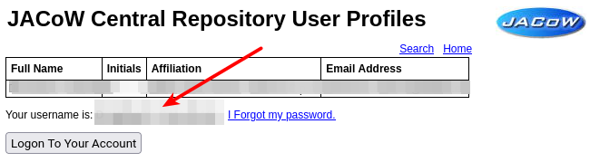

How to login to the Indico event
Deprecation Warning
As of the 17th of March 2025, the JACoW Central Repository/SPMS has been retired. Thus, these instructions are deprecated. Please see How to login to Indico instead.
Getting to the Indico event
The address of the indico event you want to access is surely published on the website of the conference (e.g., https://ipac23.org, https://ipac24.org etc.)
The usual URL for JACoW conferenes on indico.jacow.org is https://indico.jacow.org/e/{CONFERENCE} (e.g. IPAC'24, LINAC2024 etc.)
Your JACoW account
All JACoW conference are organised around the JACoW Central Repository which is an enormous database of profiles (personal data including name, email and affiliation) and accounts (profiles with a username and password which allow login). Profiles are usually created by authors while submitting an abstract and adding co-authors not yet present in the Central Repository. Accounts can be created by any individual.
Login
To login to this special JACoW Indico installation, please be sure to use your JACoW account from the JACoW Central Repository, which usually is not your email address.
In case you lost your username, please read the next section.
How to recover your username
Open the JACoW Central Repository login page and click on the "Search for a Profile, Create a Profile/Account" button:

Now search your name or your email address:
The system will present a list of profiles and accounts. Chose the yours and press "Select Above" (option 1 in the next screenshot).
Your profile will be shown with your username highlighted just below your data:

Please copy and use it to login into the IPAC Indico event (not into the Central Repository anymore!).
How to reset your password
Open the JACoW Central Repository login page, enter your username and click on the "Forgotten Password" button:
You will receive an email with instructions on how to reset your password.
After this operation you will be able to login into the IPAC Indico event (not into the Central Repository anymore!).
In case of problems, please contact the JACoW Repository Manager (exact contacts available at JACoW / Contacts).
How to create a new JACoW account
Open the JACoW Central Repository login page and click on the "Search for a Profile, Create a Profile/Account" button:
Since a profile for you may already exist, possibly created by a colleague when submitting an abstract for a JACoW conferece, start by searching your name or your email address:
The system will present a result page following your search. You might find directly your profile in either the exact match or close search sections of the page:
If your profile is found you can (and should!) Click the "Select Above"button (option 1 in the above image). You will be asked to check and complete your data and create an account with a username and password.
Otherwise, if you didn't find your profile, you should click on the "Create a New Profile" link (option 2 above).
You will then be presented with a form where you can input your information:
Please read all the instructions in the page on how to format your data to be added. In particular, select your affiliation from the list available in the system. Refrain from adding new affiliations whenever a similar already exists. In case of doubts, please contact the JACoW Repository Manager (exact contacts available at JACoW / Contacts)
Not shown in the above image is the part related to conference series you are interested: please select all the ones for which you want to receive the general announcements.
When ready, press the "Submit" button at the bottom of the page.
Troubleshooting
If you cannot login to the Indico event, please try logging in the JACoW Central Repository first. If this works successfully, try logging in Indico with the same username/password. In case this won't work, contact the Scientific Secretariat/Event Administrator (contacts are usually provided in the conference website) or the JACoW Repository Manager (exact contacts available at JACoW / Contacts.